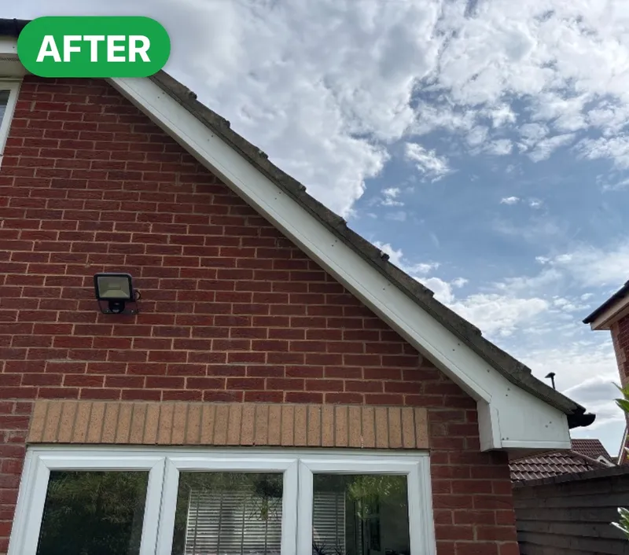

Window cleaning
from £10
Bay windows, conservatories and large picture windows cleaned with pure water for a clear, spot-free finish.
Window, gutter and fascia cleaning for homes in Cleadon, with free quotes and fully insured work.
 Before
Before
After| SR6 7 | Cleadon village and the streets around it |
|---|---|
| NE34 | Cleadon Park, which is part of South Shields (see the South Shields page) |
Not sure your postcode is covered, or live just outside it? Call or text 07415 085860 and we'll let you know.
Cleadon is a village on the rise between South Shields and Sunderland, known for Cleadon Windmill and the Cleadon Hills. Its addresses carry a Sunderland post town and an SR6 7 postcode, which is why people sometimes think it is in Sunderland. It is in South Tyneside, and we cover it either way.
There is a good number of larger detached and semi-detached houses here, often with bay windows, conservatories and long roof lines. More glass and more gutter means more to keep on top of, and it is exactly the kind of property a ground-based gutter vacuum handles well.
Pick one service or combine them for a complete refresh. Every job starts with a free quote, so you know the price before we begin.
Bay windows, conservatories and large picture windows cleaned with pure water for a clear, spot-free finish.
Mature gardens mean leaves and seeds in the gutters. We clear them from the ground, including along longer roof lines.
Fascias and soffits on bigger roofs washed back to white, with algae and staining removed.
Prices are starting prices. The final cost depends on property size, access and condition.
Cleadon's post town is Sunderland and its postcode starts SR6 7, but the village is in South Tyneside. We cover it either way.
Cleadon Park has NE34 postcodes and is part of South Shields. We cover it too, so see the South Shields page for the details.
Window cleaning starts from £10, gutter cleaning from £80 and fascia cleaning from £70. The final price depends on the size and type of the property, so we give a free quote first.
Call or text 07415 085860, message us on WhatsApp or email crystalcleanservs@gmail.com with your address and what you need cleaning. Quotes are free.
Tell us what you need cleaning and your address. We'll come back to you with a clear price.
07415 085860